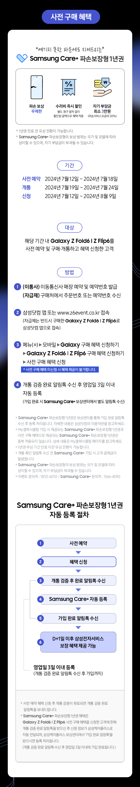
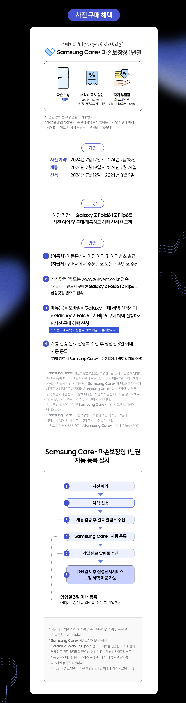

사전 구매 혜택
“예기치 못한 파손에도 지켜드리는” Samsung Care+ 파손보장형 1년권- 파손 보상 무제한
- 수리비 즉시 할인 별도 청구 절차 없이 할인된 금액으로 혜택 적용
- 자기 부담금 최소 3만원 (파손서비스 요금의 30%)
* 1년권 만료 전 유상 전환이 가능합니다.
* Samsung Care+ 파손보장형의 보상 범위는 국가 및 모델에 따라 상이할 수 있으며, 자기 부담금이 부과될 수 있습니다.
- 기간
- 사전 예약
- 2024년 7월 12일 ~ 2024년 7월 18일
- 개통
- 2024년 7월 19일 ~ 2024년 7월 24일
- 신청
- 2024년 7월 12일 ~ 2024년 8월 9일
- 대상
- 해당 기간 내 Galaxy Z Fold6 l Z Flip6를 사전 예약 및 구매·개통하고 혜택 신청한 고객
- 방법
-
(이통사) 이동통신사 매장 예약 및 예약번호 발급
(자급제) 구매처에서 주문번호 또는 예약번호 수신 -
삼성닷컴 앱 또는 www.z6event.co.kr 접속
(자급제는 반드시 구매한 Galaxy Z Fold6 l Z Flip6로 삼성닷컴 앱으로 접속) -
메뉴(≡) ▶ 모바일 ▶ Galaxy 구매 혜택 신청하기
▶ Galaxy Z Fold6 l Z Flip6 구매 혜택 신청하기 ▶ 사전 구매 혜택 신청 * 사전 구매 혜택 미신청 시 혜택 제공이 불가합니다. -
개통 검증 완료 알림톡 수신 후 영업일 3일 이내 자동 등록
(가입 완료 시 Samsung Care+ 보상센터에서 별도 알림톡 수신)
-
* Samsung Care+ 파손보장형 1년권은 보상센터를 통해 가입 완료 알림톡 수신 후 등록 처리됩니다.
자세한 내용은 삼성닷컴의 이용약관을 참고하세요. -
* My갤럭시클럽 가입 시 제공되는 Samsung Care+ 파손보장형 1년권과 사전 구매 혜택으로 제공되는
Samsung Care+ 파손보장형 1년권은 중복 적용되지 않습니다. 상세 내용은 My갤럭시클럽 페이지를 참고하세요. - * 1년권 무상 기간 만료 이전 유상 전환이 가능합니다.
- * 개통 확인 알림톡 수신 전 Samsung Care+ 가입 시 고객 결제금이 발생합니다.
- * Samsung Care+ 파손보장형의 보상 범위는 국가 및 모델에 따라 상이할 수 있으며, 자기 부담금이 부과될 수 있습니다.
- * 이벤트 문의처 : 1833-6010 / Samsung Care+ 문의처 : 1566-4590
- 1 사전 예약
- 2 혜택 신청
- 3 개통 검증 후 완료 알림톡 수신
- 4 Samsung Care+ 자동 등록
- 5 가입 완료 알림톡 수신
- 6 D+1일 이후 삼성전자서비스 보장 혜택 제공 가능
3~5번 : 영업일 3일 이내 등록 (개통 검증 완료 알림톡 수신 후 가입까지)
※ 사전 예약 혜택 신청 후 개통 검증이 완료되면 개통 검증 완료 알림톡을 보내드립니다.
※ Samsung Care+ 파손보장형 1년권 혜택은 Galaxy Z Fold6 l Z Flip6 사전 구매 혜택을 신청한 고객에 한해 개통 검증 완료 알림톡을 받으신 후 신청 정보가 삼성케어플러스로 자동 전달되며, 삼성케어플러스 보상센터에서 ‘가입 완료 알림톡’을 받으시면 등록 처리됩니다. (개통 검증 완료 알림톡 수신 후 영업일 3일 이내에 가입 완료됩니다.)
꼭 확인하세요!
- 본 이벤트 내용은 당사 사정에 따라 예고 없이 변경 또는 중단될 수 있습니다.
- 사은품 및 제품 이미지는 연출된 이미지이며 실제와 다를 수 있습니다.
- 사은품은 재고 소진 시 제한된 품목, 컬러로 운영됩니다.
- 고객이 잘못 입력한 정보로 인한 혜택 미제공은 당사가 책임지지 않습니다.
- 해외에서 구매한 단말은 프로모션 대상이 아니며 해외 USIM 사용 시 프로모션 참여가 불가합니다.
- 개통 후 14일 내 취소 시 사은품을 반납하셔야 합니다.
- 사전 구매 혜택과 일반 구매 혜택은 중복 제공되지 않습니다.
- 혜택별 세부 유의사항은 삼성닷컴 이벤트 페이지 (https://www.samsung.com/sec/event/galaxy-z6/promotion/app) 를 확인 바랍니다.
- 혜택별 문의처는 상세 유의사항을 확인 바랍니다.
- 최초 통화일은 휴대폰 개통 후 최초 통화 수신 또는 발신 기준입니다.
(최초 통화일 확인 경로 : 앱스 ▶ 설정 ▶ 휴대전화 정보 ▶ 상태 ▶ 최초 통화일)
사전 구매 혜택 유의사항
- 예약번호가 있어야 사전 구매 혜택을 받으실 수 있습니다. (이동통신사 예약 접수 기준)
- 예약하신 이동통신사에서 Galaxy Z Fold6 | Z Flip6를 개통하셔야 사전 구매 혜택을 받으실 수 있습니다.
- 개통 검증 알림톡은 사전 예약 혜택 신청 후 개통이 확인되면 발송됩니다.
(자급제는 사전 구매 이력 확인 후 발송됩니다.) - Galaxy Z Fold6 | Z Flip6 단말기당 1회 신청 가능합니다.
- 자급제 단말기는 삼성전자와 협의된 판매처 외에는 사전 구매 혜택을 받으실 수 없습니다.
- 만 14세 미만은 법정대리인 본인인증으로 신청하셔야 혜택을 받으실 수 있습니다.
- My갤럭시클럽 혜택 Samsung Care+는 사전 구매 혜택과 중복 제공되지 않습니다. 상세 내용은 My갤럭시클럽 페이지를 참고하세요.
- Samsung Care+ 파손보장형 1년권 등록이 완료되면 보상센터를 통해 가입 완료 알림톡이 발송됩니다.
- Samsung Care+ 가입 기간 중 1회에 한하여 양도 가능합니다. 양도 절차 등 자세한 사항은 Samsung Care+ 문의처(1566-4590)로 문의하시면 됩니다.
- Samsung Care+ 가입이 완료되지 않으면 보장 혜택을 적용받으실 수 없습니다. 가입 완료 다음날부터 삼성전자서비스에서 혜택 적용이 가능합니다.
- 이벤트 문의처 : 1833-6010